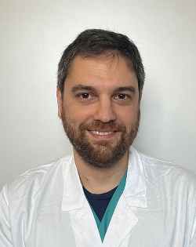
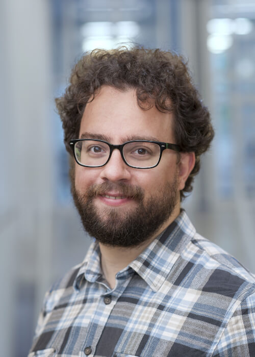
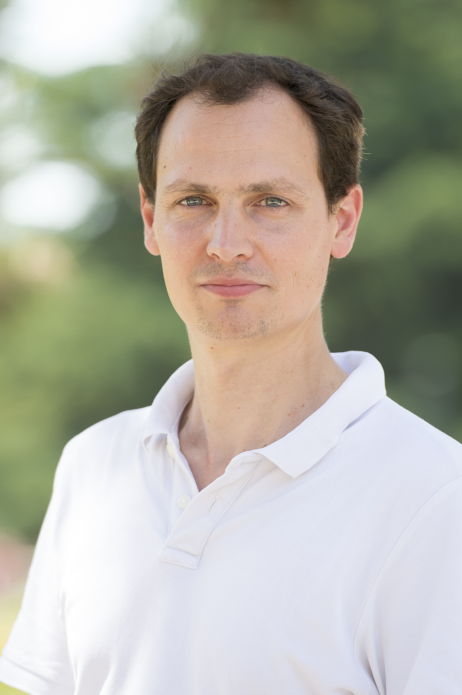
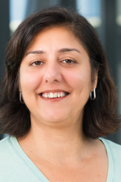
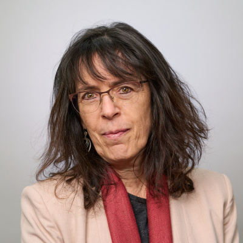
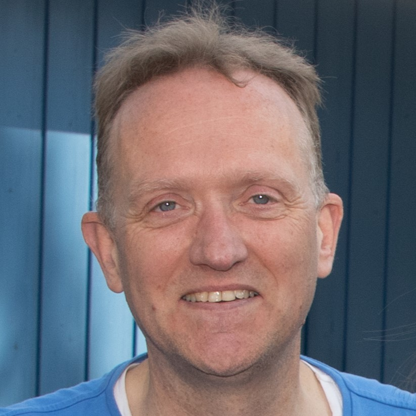
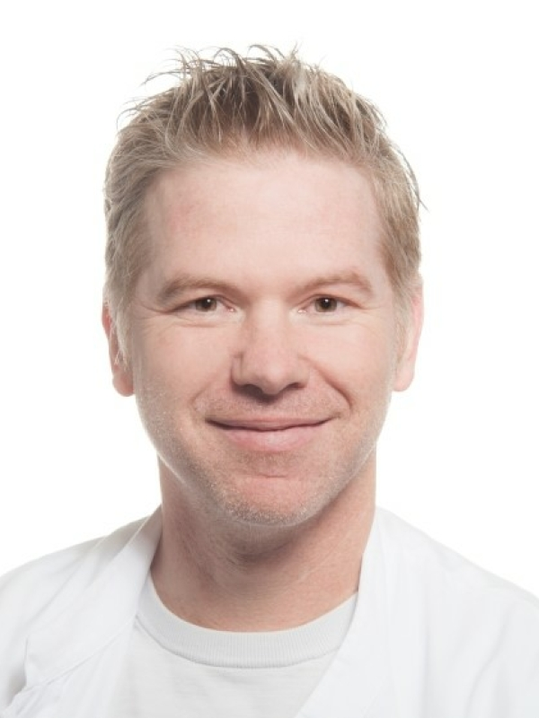
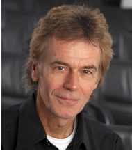

Shape scientific exchange
Work with the Local Organising Committee to develop a balanced scientific programme, including plenary and special sessions that reflect the breadth of the H&I field.
The EFI Scientific Committee promotes science in histocompatibility and immunogenetics across Europe and beyond. It supports the annual EFI Conference, encourages collaboration between laboratories and scientific societies, and helps welcome new investigators into the field.
Work with the Local Organising Committee to develop a balanced scientific programme, including plenary and special sessions that reflect the breadth of the H&I field.
Advise on the Ruggero Ceppellini Lecture and review nominations for the Julia Bodmer Award.
Build links among EFI members, regions and partner societies, and create opportunities for early-career scientists to contribute.
Current membership is based on EFI’s published committee page. Before publication, EFI Office should verify each role, country, affiliation, portrait, biography and optional ORCID link.








Each profile should include a professional portrait, institution and country, a 40–60 word scientific biography, 3–5 research-interest tags, committee role/term, and an optional, member-supplied ORCID link. This makes expertise visible while respecting the diversity of EFI’s national and regional communities. Do not publish personal email addresses, ORCID identifiers or biographies without the member’s approval.
Contact the committee